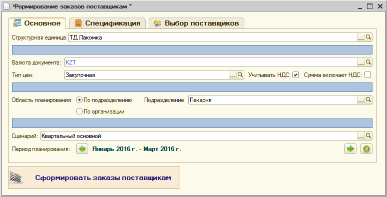
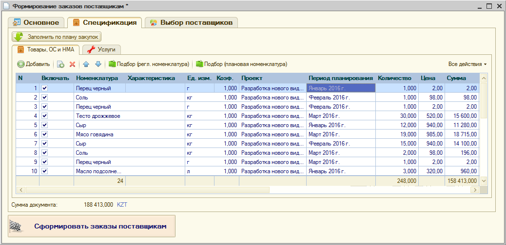

Для автоматизированного формирования заказов поставщикам на основании планов закупок используется обработка "Формирование заказов поставщикам".
На первом шаге на закладке "Основное" указываются следующие данные:
1. В группе "Валюта документа, цены и НДС" указываются значения соответствующих реквизитов создаваемых документов. В зависимости от указанного типа цен, для дальнейшего анализа будут использоваться цены поставщиков, зарегистрированные именно по этому типу цен.
2. В группе "Область планирования" определяется, следует ли использовать данные плана закупок по всей организации, либо только по конкретному подразделению.
3. В группе "Параметры планирования" указываются сценарий и период планирования, данные которых служат источником для формирования заказов поставщикам.

После того, как указаны основные параметры, можно переходить на закладку "Спецификация", на которой происходит выбор отдельных позиций плана, участвующих в оформлении заказов поставщикам.

На данной странице следует нажать кнопку "Заполнить по плану закупок", которая заполняет табличные части удовлетворяющими условиям отбора позициями плана закупок.
При помощи установки флажка "Включать" напротив каждой строки, можно управлять составом позиций, участвующих в дальнейшем процессе.
Выбор поставщиков осуществляется на закладке "Выбор поставщиков".
Для выбора поставщиков следует выполнить следующие действия:
1. Нажать на кнопку "Получить цены поставщиков", после чего будет выведен перечень позиций плана, у которых установлен флажок "Включать". Для каждой позиции система выедет список всех контрагентов, цены которых для нее зарегистрированы. И по умолчанию установит в качестве контрагента того, который имеет наименьшую цену.
2. При необходимости, выбрать/перевыбрать поставщиков по нужным позициям с помощью установки флажка напротив нужного контрагента. Выбранный контрагент и его цена устанавливаются напротив номенклатуры. Если по позиции не зарегистрировано цен ни от одного поставщика, тогда поле контрагента будет пустым, и его можно заполнить вручную, указав также и цену.
3. Нажать кнопку "Установить выбранных поставщиков", при ее нажатии система установит выбранных поставщиков для строк, находящихся на закладке "Спецификация", заполнит для этих строк цену поставщика и рассчитает общий суммовой итог с учетом включаемых позиций и выбранных цен.
После того, как поставщики выбраны для нужных позиций, можно сформировать заказы при помощи кнопки "Сформировать заказы поставщикам". При этом будут сформированы заказы, сгруппированные по поставщикам, для тех строк на закладке "Спецификация", для которых установлен признак "Включать" и заполнен поставщик. После этого флажки у таких позиций снимаются автоматически, и можно повторять процесс для оставшихся позиций.
Таким образом, можно использовать мастер для поэтапного определения поставщиков по порциям строк плана закупок.